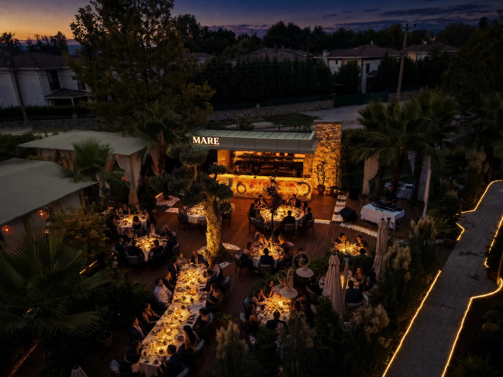

Kalabalık bir ekip ya da bayi grubu için toplu bir organizasyon planlarken, mekan seçimi büyüklüğü kadar kalitesini de korumalı.
Toplu Organizasyonlarda Mekan Seçimi Neden Zor?
Kalabalık bir grup söz konusu olduğunda, pek çok mekan servis kalitesinden ödün veriyor; menü standart bir banket formatına indirgeniyor ve her masa aynı özeni görmüyor. Sapanca'da toplu organizasyon planlarken bu riski göz önünde bulundurmak, günün kalitesini doğrudan etkiler.
Mare Gastro'da Grup Büyüklüğüne Göre Planlama
Grup büyüklüğünüzü %s paylaştığınızda, ekibimiz Didi Otel bahçesinde en uygun oturma düzenini sizin için hazırlar. Küçük bir ekip yemeğinden kalabalık bir bayi organizasyonuna kadar farklı ölçekte gruplar ağırlanıyor.

Paylaşımlık Menü ile Toplu Organizasyonlarda Kalite Kaybı Yaşanmaz
Deniz ürünleri ağırlıklı paylaşımlık tabaklar, kalabalık bir masada herkesin aynı özenle hazırlanmış lezzetleri tadabilmesine imkân tanır. Menümüzden grup için uygun seçenekleri önceden inceleyebilirsiniz.
Otopark, Ulaşım ve Kurumsal Güvence
Farklı araçlarla gelen kalabalık bir grup için otopark, göz ardı edilmemesi gereken bir detay. Didi Otel bünyesindeki geniş otopark imkânı, bu konuda ekstra bir planlama yapmanıza gerek bırakmıyor. Sapanca'nın İstanbul'a yaklaşık 1,5 saat mesafede olması da, farklı noktalardan gelen bir grubun kolayca buluşabilmesini sağlıyor.
Rezervasyon Önerileri
Toplu organizasyonlar için kişi sayısını ve tarihi WhatsApp üzerinden en az birkaç gün önceden paylaşmanız, servis akışının sorunsuz ilerlemesini sağlar.